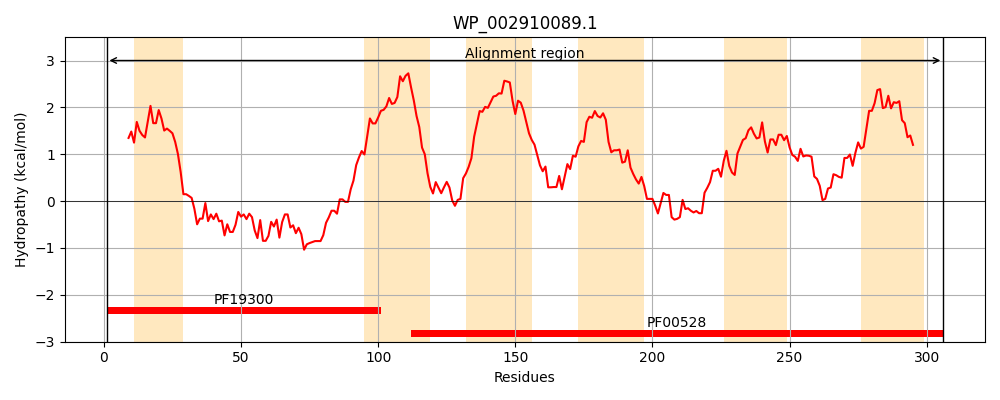
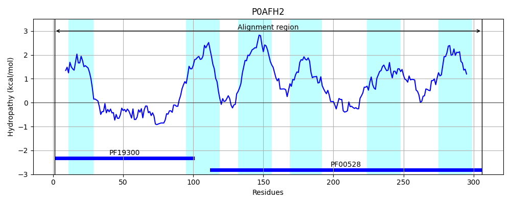
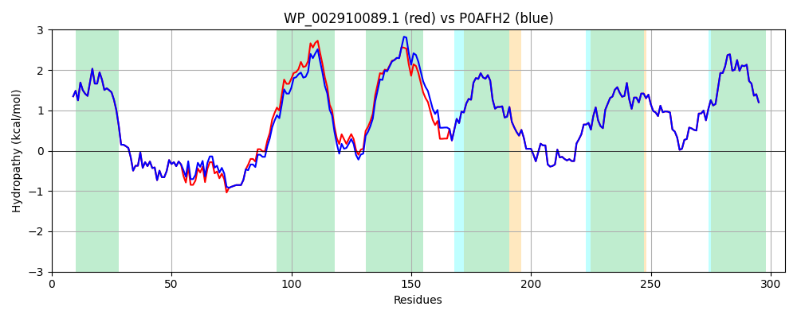

Hit Accession: P0AFH2
Hit TCID: 3.A.1.5.41
Hit Description: gnl|BL_ORD_ID|8823 gnl|TC-DB|P0AFH2|3.A.1.5.41 Oligopeptide transport system permease protein OppB OS=Escherichia coli (strain K12) GN=oppB PE=1 SV=1
Mach Len: 306
e:0.000000
Query TMS Count : 6
Hit TMS Count: 6
TMS-Overlap Score: 6.800000
Predicted Substrates:CHEBI:7755;oligopeptide
BLAST Alignment:
Score: 1501 , Bit scores: 582 bits, E-value: 0.0e+00, Alignment length: 306, Percentage identity: 96
Query: 1 MLKFILRRCLEAIPTLFILITISFFMMRLAPGSPFTGERTLPPEVMANIEAKYHLNDPIMTQYFNYLKQLAHGDFGPSFKYKDYSVNDLVAASFPVSAKLGFAAFLLAVVIGVAAGVIAALKQNTRWDYAVMGVAMTGVVIPSFVVAPLLVMIFAITLHWLPGGGWNGGALKFMILPMVALSLAYIASIARITRGSMIEVLHSNFIRTARAKGLPMRRIILRHALKPALLPVLSYMGPAFVGIITGSMVIETIYGLPGIGQLFVNGALNRDYSLVLSLTILVGALTILFNAIVDVLYAVIDPKIRY 306
MLKFILRRCLEAIPTLFILITISFFMMRLAPGSPFTGERTLPPEVMANIEAKYHLNDPIMTQYF+YLKQLAHGDFGPSFKYKDYSVNDLVA+SFPVSAKLG AAF LAV++GV+AGVIAALKQNT+WDY VMG+AMTGVVIPSFVVAPLLVMIFAI LHWLPGGGWNGGALKFMILPMVALSLAYIASIARITRGSMIEVLHSNFIRTARAKGLPMRRIILRHALKPALLPVLSYMGPAFVGIITGSMVIETIYGLPGIGQLFVNGALNRDYSLVLSLTILVGALTILFNAIVDVLYAVIDPKIRY
Sbjct: 1 MLKFILRRCLEAIPTLFILITISFFMMRLAPGSPFTGERTLPPEVMANIEAKYHLNDPIMTQYFSYLKQLAHGDFGPSFKYKDYSVNDLVASSFPVSAKLGAAAFFLAVILGVSAGVIAALKQNTKWDYTVMGLAMTGVVIPSFVVAPLLVMIFAIILHWLPGGGWNGGALKFMILPMVALSLAYIASIARITRGSMIEVLHSNFIRTARAKGLPMRRIILRHALKPALLPVLSYMGPAFVGIITGSMVIETIYGLPGIGQLFVNGALNRDYSLVLSLTILVGALTILFNAIVDVLYAVIDPKIRY 306 | Protein Hydropathy Plots: |
|---|
|  |  |
Pairwise Alignment-Hydropathy Plot:
|
|---|
|  |